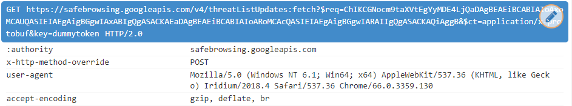

Iridium Browser
Iridium é um fork focado em privacidade do Google Chrome. De acordo com seu site: "Todas as modificações aumentam a privacidade do usuário e garantem que as tecnologias mais recentes e seguras sejam usadas. A transmissão automática de consultas parciais, palavras-chave e métricas para os serviços centrais é impedida e ocorre apenas com a aprovação do usuário." Ao contrário de outros navegadores do gênero, este é completo (possui todos os complementos disponíveis para o Chrome) e, portanto, é recomendado para o uso diário.
Nível de Spyware: Baixo
Depois de seguir o guia de mitigação, este software é classificado como Não é Spyware.
A única solicitação não solicitada é para o recurso Google SafeBrowsing e pode ser facilmente desativada no menu Preferências. Além disso, foram adicionados aprimoramentos de privacidade não relacionados ao Google, como bloquear cookies de terceiros por padrão e excluir armazenamento local ao fechar. A lista completa das diferenças entre Chrome e Iridium pode ser encontrada aqui[1]. No entanto, esta lista não é precisa e cada afirmação feita deve ser verificada pelo usuário.
Ligando para Casa
O navegador Iridium fará essas requisições ao Google para atualizar uma lista de bloqueio de sites para seu recurso SafeBrowsing:

O navegador Iridium também baixará esta lista de bloqueio de um espelho mantido pelos desenvolvedores. Como o navegador da Web está sempre "ligando para casa" para o Google ou para os servidores dos desenvolvedores, essa é uma forma de spyware que pode ser usada para monitorar o uso do programa, bem como a coleta do User-Agent dos usuários do programa. (Consulte o artigo HTTP)
Essa requisição é feita 5 minutos após o início do programa, e em seguida, atualizada a cada 30 minutos.
Reivindicações de Privacidade Imprecisas
Os desenvolvedores do Iridium afirmam que, como um dos aprimoramentos de privacidade do Iridium, ele usa o recurso de spyware do Google SafeBrowsing, mas com seu próprio espelho do banco de dados do Google, o que significa que você pode usar o recurso sem ligar constantemente para o Google, mas em vez disso, ligando para os desenvolvedores, que, embora ainda seja uma forma de spyware, é um aumento de privacidade para o usuário[1]. Pelo menos seria se esta seção fosse realmente verdadeira. Você pode ver que na seção "Ligando para Casa" deste artigo, essa afirmação simplesmente não é verdadeira, o que é muito ruim porque prejudica a credibilidade das outras alegações de privacidade que a Iridium faz.
De acordo com outro escritor, em seus testes o navegador só se conectaria ao iridiumbrowser.de. Portanto, é possivel que essa reivindicação de privacidade seja verdadeira para algumas versões do Iridium e falsa para outras versões do Iridium. A versão do Iridium que liga para o Google é a versão 2018.4 para Windows de 64 bits, testada no Windows 7, se você quiser ver por si mesmo.
Não apenas essa reivindicação de privacidade é imprecisa, mas uma Pull Request[2] foi aberta no GitHub dos desenvolvedores por MAIS DE UM ANO sem resposta da equipe de desenvolvimento. É muito decepcionante ver uma preocupação com a privacidade na frente deste projeto, mas, em seguida, uma atitude negligente com problemas de privacidade de longa data, uma vez que você abre a cortina e analisa um pouco mais as reivindicações que esse navegador faz.
Fontes
1.
Diferenças entre o Iridium e o Chromium
[web.archive.org]
[archive.is]
[via.hypothes.is]
2.
Ainda acesso aos servidores de SafeBrowsing do Google
[web.archive.org]
[archive.is]
Esse artigo foi editado pela última vez em 16/05/2018
Esse artigo foi criado em 05/05/2018
Esta é uma tradução do artigo em Inglês. Pode estar desatualizado. Compare as datas em ambos os artigos.
Se você quiser editar este artigo, ou contribuir com seu(s) próprio(s) artigo(s), visite-nos no repositório git no Codeberg.
Todas as contribuições devem ser licenciadas sob a licença CC0 para serem aceitas.

Voltar ao Catálogo